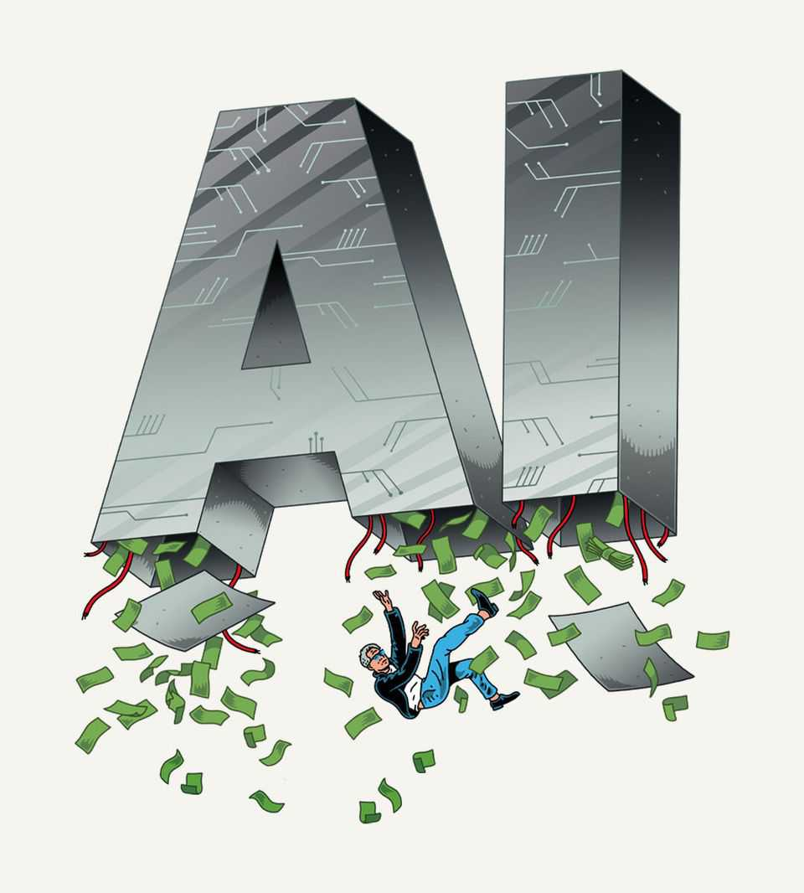

Why you should expect an AI crash
But not necessarily a financial cataclysm

Nov 12th 2026
Could the news be much more dramatic? Artificial-intelligence models keep growing more powerful, faster than almost anyone predicted. Next week Anthropic, a frontier model-maker, is expected to list its shares in what could be the biggest-ever IPO of an AI firm. Yet in some ways the AI boom is looking wobbly. A sex-and-spying scandal is rocking Nvidia, the top chipmaker. America’s Democratic Party, having won the midterms, is raring to go after data centres and Trump-adjacent tech titans. Some fear an almighty tech bust is coming. How worried should the world be?
History offers clues. Plenty of past technologies, from canals and railways to the internet, have brought market euphoria and then despair. Bets on them went wrong even though the underlying technologies proved revolutionary.
Even techno-optimists like The Economist should worry about a crunch today. The scale of expected investment in AI is vast, an annual average of 3.6% of America’s GDP between 2025 and 2032, by one forecast. AI-related shares have had a dizzying run: the top ten heavily AI-exposed stocks are now nearly 40% of America’s S&P 500 index. Corporate equities have reached 38% of American household net worth—nearly a quarter higher than at the peak of the dotcom boom. And over the 12 months to August net foreign inflows into American equities crossed $1trn for the first time, many times greater than for the entire 2010s.
Jitters over whether all this is sustainable have left stocks roughly flat over six months. After the midterms the NASDAQ index of tech firms fell by 5.5% in a day, as investors fretted that Democrats would block data centres. The share price of Nvidia, whose balance-sheet underpins much of the AI industry, is down by nearly 30% from its peak. When Anthropic floats, bears argue, its prospects will be visible to all in its stock price, a fall in which could trigger a market-wide rout. Anthropic and its main rival, OpenAI, are the customer-facing companies feeding the entire AI supply chain, including data centres, chip designers and chipmakers. If they have too few sales or cannot charge high enough prices, disaster looms.
For investors to have overestimated revenues from AI would be a mistake consistent with financial history. The good news is that the consequences this time would probably be manageable. A dotcom-style equity-market crash could happen; a deep financial crisis is much less likely.
In the past, investors who spotted hot new technologies have often been poor forecasters of who will profit from them. “If a farsighted capitalist had been present at Kitty Hawk, he would have done his successors a huge favour by shooting Orville down,” wrote Warren Buffett in 2008, noting the low profitability of airlines. Many who financed the buildout of fibre-optic cable in the 1990s lost their shirts; it was the tech firms that built businesses on that infrastructure that printed money.
It is easy to see how a bust could happen now. Much of Anthropic’s revenue comes from venture-capital-backed AI startups and could dry up in a crunch. America’s model-makers are only about six months ahead of Chinese rivals who, in effect, give away models for nothing. As we report high valuations for Anthropic and OpenAI assume they will draw further ahead of the competition, or develop new business models which exploit their small lead better.
The gloomiest prognosticators, inspired by a prominent book, say that their failure would lead to a crash like the railway bust of 1873—the last time such a huge investment binge, relative to GDP, took place. Then, disappointing returns caused a financial calamity that brought about deflation and the longest American recession on record.
Fortunately the comparison is ill-judged. Most of America’s capital expenditure on AI goes on imported equipment such as chips. The direct exposure of its economy to the boom is therefore much lower—perhaps 0.3% of GDP. An AI crunch would be far worse for Taiwan’s economy (annual growth rate: 14%) than for America’s. Financial conditions are also utterly different now. In the 1870s there was no central bank and the crash was met with contractionary monetary policy rather than the interest-rate cuts that it would trigger today.
The way the AI boom has been financed is also reassuring. The worst crashes—including 1873’s—follow booms that are mostly funded by debt (and it is excessive household credit, not corporate borrowing, that is the reddest flag). True, the AI industry is borrowing to invest far more than it was two or three years ago, when investments were financed overwhelmingly by the vast cashflows of tech behemoths. Yet the accumulated ai capital stock is still mostly equity-financed. The five “hyperscalers” (big owners of AI data centres) have debts and lease commitments worth around 30% of their book value or just 6% of their market value; their legacy businesses are still hugely profitable. Nvidia’s leverage is negligible. AI debt has not pushed lending to America’s nonfinancial sector above its long-run trend, relative to GDP.
What, then, might happen in an AI-caused crash? Households, nursing losses from the stock market, would spend less. Companies that are highly leveraged, including many “neocloud” data-centre startups, could blow up. There might be a shallow American recession, comparable to that of 2001. For things to get much worse, an AI crash would have to coincide with another calamity, such as a bond-market panic or a war. That is possible: several rich countries’ debts are dangerously high and some global leaders are unpredictably belligerent. But for now, it is not the most likely outcome.
What matters more is what happens to the technology itself. Silicon Valley’s titans think they already have the infrastructure they need to build a superintelligence. Some predict that recursive self-improvement—AIs building more powerful AIs without human input—could occur as soon as next year. A furious political backlash could still interrupt the breakneck advance of AI. A financial crash probably won’t. ■